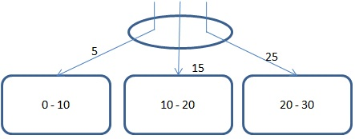

水平分区 水平分区又称为数据库分区或横向分区。
在SequoiaDB集群环境中，用户可以通过将一个集合中的数据切分到多个复制组中，以达到并行计算的目的，此数据切分称为水平分区。水平分区是按一定的条件把全局关系的所有元组划分成若干不相交的子集，每个子集为关系的一个片段，称为分区；一个分区只能存在于一个复制组中，但一个复制组可以承载多个分区；分区在复制组之间可以通过水平切分操作进行移动。

垂直分区 垂直分区又称为集合分区或纵向分区。
在SequoiaDB集群环境中，用户也可以将一个集合全局关系的属性分成若干子集，并在这些子集上作投影运算，将这些子集映射到另外的集合上，从而实现集合关系的垂直切分；该集合称之为主集合，每个切分的子集称为分区，分区映射的集合称为子集合；一个分区只能映射到一个子集合中，但一个子集合可以承载多个分区；分区在子集合之间可以通过垂直切分操作进行重映射。

混合分区 在SequoiaDB集群环境中，可以将集合先通过垂直分区映射到多个子集合中，再通过水平分区将子集合切分到多个复制组中，从而实现混合分区。
分区方式
无论是水平分区还是垂直分区都有两种方式：散列分区（Hash）和范围分区（Range）。两种分区方式中判定分区划分所依据的字段称为“分区键”。分区键基于集合定义，每个分区键可以包含一个或多个字段。
Range方式下依据记录中分区键的范围选择所要插入的分区。Hash方式下根据记录中分区键生成的hash值选择所要插入的分区。
Sharding is based on the definition of collection. Every collection key contains one or more fields.

In this chart, 3 square areas represent 3 data nodes. The ellipse represents coord node. Every data node defines the range of data in it . For example, node 1 stores data between 0 and 10 including 0.
When users insert a record of data, coord node firstly finds out the sharding which the sharding key of the data belongs to. If there is no sharding key, it's defined in the type of Undefined. (Data in Undefined type can also be compared to that in common data types.)
After the sharding is found, coord node will send the request that it receives to it.